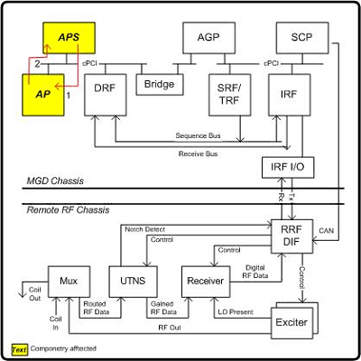

Operating Documentation
Direction 5440001-3, Rev# 6
Signa HDxt Service Methods
Module Version 1.0, Version Date 4/26/07
Operating Documentation |
Custom Page Diagnostic
Pass/Fail Diagnostic
The user must select the test that corresponds to the number of AP boards present. If the test sees a different number of boards, it logs an error. The test confirms that the correct number of CPUs and the memory length is correct. The memory is then run through a reasonably complete memory test. Allowing for Single versus Dual Board configurations was done in an attempt to cover the case where the system has 2 AP boards but one of them is unresponsive.
Long memory tests are more thorough than short memory tests but execution time is also longer. The short selection is adequate for most testing.
Illustration 1: APS to AP Datapath Block Diagram

An unresponsive board may be mistaken for an empty slot in a one-test scenario.
AP board help page - Reflex 200 & 400
AP board help page – Reflex 200B & 400B
APS board help page